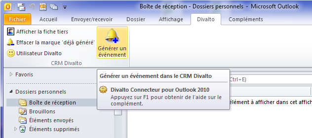
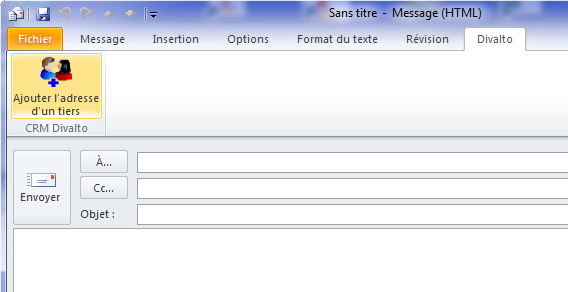

Au démarrage, Outlook charge le connecteur Divalto et installe les boutons spécifiques "Divalto" dans l’onglet Divalto du ruban général et dans la boîte de dialogue de visualisation et de création des messages.
Nota bene : Outlook peut ne pas afficher immédiatement les boutons car il attend qu’il y ait un mail en cours dans sa fenêtre de droite. Il suffit alors de cliquer sur un mail pour faire apparaître les boutons. Ce comportement ne se produit qu’au démarrage de Outlook : ensuite, les boutons restent toujours présents.


Description des boutons :
Utilisateur Divalto : Appelle la boîte de dialogue de saisie du code utilisateur pour Divalto.
Générer un événement : Prend le(s) mail(s) sélectionné(s) pour générer un événement dans la CRM de Divalto.
Afficher le fichier tiers : Appelle la fiche tiers correspondant au champ « De » du message sélectionné.
Supprimer la marque « Déjà généré » : Enlève cette marque, ce qui permet d’utiliser ce mail pour relancer une génération d’événement.
Remarque importante : Outlook ne prend pas immédiatement en compte la suppression de cette marque. Cette dernière ne sera prise en compte qu’au prochain démarrage d’Outlook. Si l'on désire générer immédiatement un événement sur ce mail, il faut donc refermer Outlook et le relancer.
Ajouter l’adresse d’un tiers : Appelle le programme de consultation de la liste des tiers. On peut alors sélectionner l’adresse Internet d’un tiers afin de l’ajouter à la liste « A… », « CC… » ou « CCI… ».